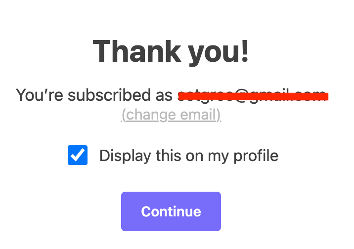

A lot of writers I like have moved to Substack.
I presume that some of them are doing it for a big payday, e.g. Danny Lavery was kind enough to tell the Times that his 2-year Substack contract was worth $430,000.1 Others say that it multiplied their readership.
But as a reader, Substack is a big step down from (e.g.) blogspot, wordpress, or self-hosted content. When I click a blogpost, it’s because I want to read it, not
- share my email

- shell out cash for a product (the newsletter) I don’t know yet

- post about it on my “profile”

- recommend it to strangers

- or share it on Twitter.

All of these things help Substack make money and add friction to the reading experience. We get used to these things gradually – that’s how the shitty technology adoption curve works. But it comes at the expense of a reader experience that prioritizes reading, rather than clicks or eyeballs. No thank you.2
Danny currently has “over 16,000 subscribers” so I can see why he found this deal attractive.↩︎
BTW I’m aware of the irony that the images on this post would probably look better if I had used Substack to compose it. The alternative, I think, is I could learn a lot of HTML and make images that auto-size depending on your zoom. But I think it’s ok for them to look a little janky. They’re meant to be illustrative rather than enticing.↩︎